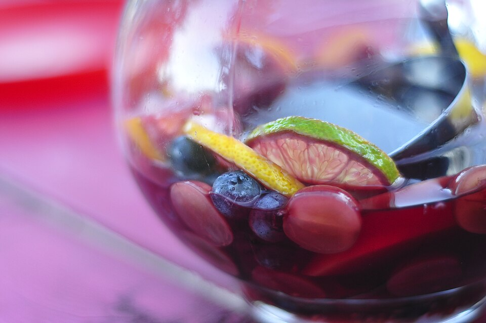

Summer Sangria
Easy Traditional Sangria
Recipe by:
Minimalist Baker

Photo: Divya Thakur / CC BY‑SA 2.0
Ingredients
- 1 (750 ml) bottle dry red wine
- ½ cup orange liqueur (e.g., Cointreau)
- 1 orange, thinly sliced
- 1 lemon, thinly sliced
- 2 tablespoons sugar (optional)
- 1 cup club soda or sparkling water
Conversion
Rate This Recipe
Directions
- In a large pitcher, combine the red wine, orange liqueur, and sugar.
- Add the orange and lemon slices. Stir gently to dissolve the sugar.
- Refrigerate for at least 1 hour (up to 4 hours) to let flavors meld.
- Just before serving, add the club soda and stir gently.
- Pour into glasses—include a few fruit slices in each—and enjoy!